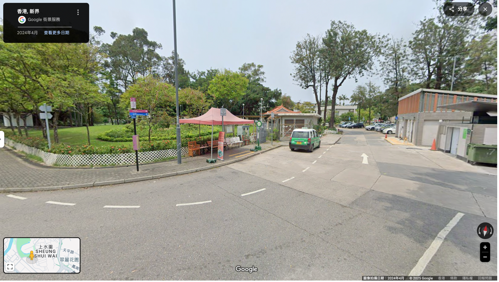

推薦路綫及交通資訊
推薦路綫
（路線長短: 4 小時 20 分，約17.5 公里)
交通資訊
由上水站出發至上水圍
方法一：新界專綫小巴59A線
- 於上水專線小巴總站上車
- 於上水鄉總站（近上水鄉村公所）下車
- 下車後沿路直行
- 在廖樂亭前路口轉右
- 在廖樂亭前路口轉右後直再轉左（鄉公所方向）
- 轉左後直行（經過鄉公所）直至到達上水圍圍內村公廁
- 到達上水圍圍內村公廁後直行直至到達榕樹公園
- 在榕樹公園前路口右轉
- 右轉後直行
- 直行大概90米後到達目的地




方法二：由上水站步行至上水圍 (約1.4公里, 需時大概17分鐘)
- 從上水站D1出口直行，過馬路到新豐路
- 在新豐路一直向前直行約200米，直至到達有記駕駛學院後轉左至寶運路
- 沿寶運路一直向前直行後，過馬路
- 過馬路後左轉直行，繼續沿寶運路直行
- 轉入第一個分岔口（於右邊）直行到東慶路
- 向左轉直行
- 直至到達59A上水鄉總站
- 沿路直行
- 在廖樂亭前路口轉右
- 在廖樂亭前路口轉右後直再轉左（鄉公所方向）
- 轉左後直行（經過鄉公所）直至到達上水圍圍內村公廁
- 到達上水圍圍內村公廁後直行直至到達榕樹公園
- 在榕樹公園前路口右轉
- 右轉後直行
- 直行大概90米後到達目的地


由河上鄉離開
方法一：乘搭小巴
您可乘搭專綫小巴51K到上水站公共小巴總站，再轉乘其他交通工具。
上車位置：河上鄉鄉公所

下車位置：上水站公共小巴總站

方法二：乘搭的士
由落馬洲瞭望台離開
方法一：由落馬洲瞭望台步行3分鐘至下灣漁民新村乘搭75小巴 / B1巴士
75小巴
上車位置（下灣漁民新村站）（近安記士多）：

B1巴士
上車位置：

方法二：乘搭75小巴 / 步行（約15分鐘，1.1公里）至新田公共運輸交匯處轉乘其他交通工具
75小巴
上車位置（下灣漁民新村站）（近安記士多）：

步行路線：
- 從落馬洲瞭望台離開後，經落馬洲徑到落馬洲路
- 沿落馬洲路直行800米
- 右轉進入青山公路洲頭段
- 到達新田公共運輸交匯處


新田公共運輸交匯處路線資料：